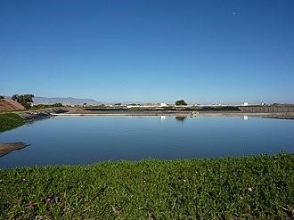
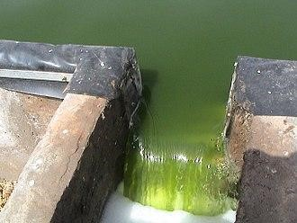

Be eco and economy friendly : Use WSPs in wastewater
treatment
Why WSPs are called “Stabilization” Ponds.
Organic matter can be found in sewage and a variety of industrial wastewaters. When wastewater is dumped into surface water bodies without being treated, the organic debris provides food for the bacteria that live there. Organic matter is used by these organisms to generate energy for their development and reproduction. This is accomplished by respiration, in which organic matter is converted to carbon dioxide and water. These stable components do not pollute the water, that's why they are referred to as "stabilisation" ponds.
Types
Man-made basins with a single or many series of anaerobic, facultative, or maturation ponds make up waste stabilisation ponds. Because anaerobic waste stabilisation ponds have extremely little dissolved oxygen, they can support both an aerobic surface habitat and an anaerobic benthic habitat. Maturation ponds are the most diversified of the three types of ponds, providing aerobic conditions from the surface to the bottom.
The main configurations of pond systems are:- Facultative pond only.
- Anaerobic pond followed by a facultative pond.
- Facultative pond followed by maturation ponds in series;
- Anaerobic pond followed by a facultative pond followed by maturation ponds in series.
If an anaerobic pond is present, some of the floating solids in the wastewater settle, removing the organic matter that these solids supplied. The heterotrophic bacteria that get oxygen from the photosynthesis performed by algae eliminate the majority of the leftover BOD during the second stage in the facultative pond. The tertiary stage in maturation ponds is mostly responsible for pathogen clearance, while it may also help with nutrient reduction (i.e. nitrogen reduction).
Microorganisms acts as both a friend and a foe in WSPs
As a friend
In a pond, organic materials are transformed into cell material and energy for life processes such as cell reproduction and growth. Bacteria are the most significant microorganisms in ponds, as they eat most of the organic materials from the wastewater while also using oxygen. The extra oxygen released aids the aerobic species in the pond in their respiration. Atmospheric oxygen is dissolved into the liquid to keep an aerobic layer on top of the pond surface.
As a foe
In waste stabilisation ponds, pathogens can be effectively eliminated. For pathogen elimination, the technique largely relies on maturation ponds. The more ponds in the sequence, the more effective pathogen elimination becomes. Pathogens are rendered inactive by a complicated interplay of mechanisms involving pH, temperature, and UV radiation. The sedimentation method can eliminate protozoan and helminth pathogens. It's possible to attain very high removal efficiency, especially if maturation ponds are included in the treatment system. The final pond effluent may be compliant with WHO requirements for irrigating with treated wastewater (or "reclaimed water").
Adoption, budget, and applicability
Waste stabilisation ponds can treat almost any sort of wastewater and work effectively in almost any environment. They're especially well-suited to countries in the tropical and subtropical zones. Because of their efficacy in eliminating nematodes (worms) and helminth eggs, ponds are commonly employed in agriculture and aquaculture.
Ponds demand a lot of space, thus they might not be feasible in locations where land is pricey. In order to cut building expenses, a suitable topography and soil structure are also desired. In places with strict discharge rules, ponds are not an appropriate solution unless extra stages of post-treatment are implemented.
In terms of building expenses, waste stabilisation ponds are typically seen as a low-cost option. The ultimate expenses will be mostly determined by the size of the ponds, the existence of maturation ponds in the process architecture, terrain, soil characteristics, groundwater level, and the cost of land. When compared to other wastewater treatment options, these will almost always be lower.
Maintenance, operation, and comparison
Because there is no heavy electric or mechanical equipment to maintain, ponds require very little maintenance. Preliminary treatment (screen cleaning and sand removal) and inspection of pipelines, weirs, and other hydraulic structures are the only things that need to be done on a regular basis. Aeration consumes no energy, requires no significant equipment maintenance, and does not require frequent sludge removal, treatment, or disposal.
Sludge builds up inside ponds and only needs to be removed every few years or so. Anaerobic ponds require more regular removal than facultative ponds due to their smaller volume and capacity to hold sludge. Sludge can be removed by vacuum truck suction and pumping (only for small ponds), dredging, pumping from a raft, or utilising other mechanical equipment.
To restrict the production of odorous gases, aerated lagoons instead of anaerobic ponds could be employed as the initial stage in the treatment line. Detention basins are similar to detention basins, except they are "dry ponds'' designed to hold runoff temporarily as a flood control strategy. Built wetlands are intended to improve water quality by supporting rooted plants that are arranged to physically remove sediments and particulate matter.
What are Stabilization Ponds?
WSPs (waste stabilization ponds) are earthen structures that contain man-made depressions. They're most commonly employed to treat sewage and industrial effluents, but they can also be used to treat municipal run-off or stormwater. A single pond or a series of ponds may make up the system, with each pond serving a particular purpose in the pollution treatment process.
Concept of Stabilization
Organic matter can be found in sewage and a variety of industrial wastewaters. When wastewater is dumped into surface water bodies without being treated, the organic debris provides food for the bacteria that live there. Organic matter is used by these organisms to generate energy for their development and reproduction. This is accomplished by respiration, in which organic matter is converted to carbon dioxide and water. These stable components do not pollute the water, that's why they are referred to as "stabilization" ponds.
Microorganisms
In a pond, organic materials are transformed into cell material and energy for life processes such as cell reproduction and growth. Bacteria are the most significant microorganisms in ponds, as they eat most of the organic materials from the wastewater while also using oxygen. The extra oxygen released aids the aerobic species in the pond in their respiration. To keep an aerobic layer on top of the pond surface, atmospheric oxygen is dissolved into the liquid.
Removal of Pathogens
In waste stabilization ponds, pathogens can be effectively eliminated. For pathogen elimination, the technique largely relies on maturation ponds. The more ponds in the sequence, the more effective pathogen elimination becomes. Pathogens are rendered inactive by a complicated interplay of mechanisms involving pH, temperature, and UV radiation. The sedimentation method can eliminate protozoan and helminth pathogens. It's possible to attain very high removal efficiency, especially if maturation ponds are included in the treatment system. The final pond effluent may be compliant with WHO requirements for irrigating with treated wastewater (or "reclaimed water").
If an anaerobic pond is present, some of the floating solids in the wastewater settle, removing the organic matter that these solids supply. The heterotrophic bacteria that get oxygen from the photosynthesis performed by algae eliminate the majority of the leftover BOD during the second stage in the facultative pond. The tertiary stage in maturation ponds is mostly responsible for pathogen clearance, while it may also help with nutrient reduction (i.e., nitrogen reduction).
Application and Suitability
Waste stabilization ponds can treat almost any wastewater and work effectively in nearly any environment. They're especially well-suited to countries in the tropical and subtropical zones. Because of their efficacy in eliminating nematodes (worms) and helminth eggs, ponds are commonly employed in agriculture and aquaculture.
Ponds demand a lot of space; thus, they might not be feasible in locations where land is pricey. In order to cut building expenses, suitable topography and soil structure are also desired. In places with strict discharge rules, ponds are not an appropriate solution unless extra stages of post-treatment are implemented.
Operation and Maintenance
Because there is no heavy electric or mechanical equipment to maintain, ponds require very little maintenance. Preliminary treatment (screen cleaning and sand removal) and inspection of pipelines, weirs, and other hydraulic structures are the only things that need to be done on a regular basis. Aeration consumes no energy, requires no significant equipment maintenance, and does not require frequent sludge removal, treatment, or disposal.
Sludge Removal
Sludge builds up inside ponds and only needs to be removed every few years or so. Anaerobic ponds require more regular removal than facultative ponds due to their smaller volume and capacity to hold sludge. Sludge can be removed by vacuum truck suction and pumping (only for small ponds), dredging, pumping from a raft, or utilizing other mechanical equipment.
Costs
In terms of building expenses, waste stabilization ponds are typically seen as a low-cost option. The ultimate expenses will be mostly determined by the size of the ponds, the existence of maturation ponds in the process architecture, terrain, soil characteristics, groundwater level, and the cost of land. When compared to other wastewater treatment options, these will almost always be lower.
Comparison with other Infrastructure
For restricting the production of odorous gases, aerated lagoons instead of anaerobic ponds could be employed as the initial stage in the treatment line. Detention basins are similar to detention basins, except they are "dry ponds'' designed to hold runoff temporarily as a flood control strategy. Built wetlands are intended to improve water quality by supporting rooted plants that are arranged to physically remove sediments and particulate matter.